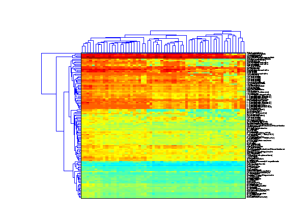

This example demonstrates some of the options of the clustergram function. The example uses data from Scherf U, Ross DT, Waltham M, Smith LH, Lee JK, Tanabe L, Kohn KW, Reinhold WC, Myers TG, Andrews DT, Scudiero DA, Eisen MB, Sausville EA,Pommier Y, Botstein D, Brown PO, Weinstein JN. Related Articles, Links "A gene expression database for the molecular pharmacology of cancer." Nature Genetics 2000 Mar;24(3):236-44. PMID: 10700175
The data used in this example is a 118x60 table of growth inhibition factors when 118 drugs with putatively understood methods of action were applied to the NCI60 cell lines.
The original data can be downloaded from http://discover.nci.nih.gov/nature2000/data/selected_data/a_matrix118.txt . For the purpose of this demonstration, the file has been converted to an Excel spreadsheet. The xlsread function can be used to read in the data from the XLS file.
[numericData, textData] = xlsread('cancerdata.xls');
xlsread reads the data in the spreadsheet into two variables, numericData, which stores numeric values and textData, which stores any text values in the table. In this case the first three columns of the table are information about the drugs used in the study.
giValues = numericData(:,2:end); drugMechanism = textData(2:end,1); drugName = textData(2:end,2); drug = strcat(drugMechanism,'-',drugName); drugID = numericData(:,1); cellLine = textData(1,4:end); tumorTypes = strtok(cellLine,':'); % Clear data that is no longer needed. clear numericData textData
giValues contains some missing data. These are marked as NaN. We can choose to remove these values or somehow impute the missing data. The function nanmedian can be used to find the median of the values in the rows or in the columns ignoring any missing values. There are several other functions in the Statistics Toolbox that work with NaN data including nanmean, nanvar and nansum.
% Find the missing values using the function *isnan*. missingVals = isnan(giValues); % Find the row and column medians ignoring NaN values. colMedians = nanmedian(giValues); rowMedians = nanmedian(giValues,2); % Replace the missing values with the row medians. rowMed = repmat(rowMedians,1,size(giValues,2)); giValues(missingVals) = rowMed(missingVals);
The function clustergram is used to perform hierarchical clustering and to generate a heat map and dendrogram of the data. The simplest form of clustergram clusters the rows of a data set using correlation as the distance metric and average linkage. In this example the drug profiles are clustered and the heat map and dendrogram show that drugs with similar methods of action clustered together.
clustergram(giValues,'rowlabels',drug,'columnlabels',tumorTypes);
The default color scheme is the red-green color scale that is widely used in microarray data analysis. In this example, a different color scheme is more useful. The 'colormap' option allows you to specify an alternative colormap. The default color scale assumes that the data is centred about zero. In this example, the data is not symmetric about zero so by setting the 'SymmetricRange' option to false, you will see more dynamic range in the heat map.
clf clustergram(giValues,'rowlabels',drug,'columnlabels',tumorTypes,... 'colormap',jet,'symmetricrange',false);
The simplest way to cluster the columns of the data is to transpose the data using the ' operator. Note that the column labels and row labels are switched and the dendrogram is still horizontal. In this example the cell lines are clustered.
clf clustergram(giValues','columnlabels',drug,'rowlabels',tumorTypes,... 'colormap',jet,'symmetricrange',false);
To perform two dimensional, or bi-clustering, set the 'dimension' option to 2. This clusters both the rows and columns of the data and produces a heat map with two dendrograms, in this example one showing the clustering of the cell lines and one showing the clustering of the drugs.
clf clustergram(giValues,'dimension',2,'rowlabels',drug,'columnlabels',tumorTypes,... 'colormap',jet,'symmetricrange',false);
You can change the settings of the clustering algorithm to use and a different distance metric or different linkage method. In this example, weighted linkage (WPGMA) is used and the dendrograms highlight different clusters with distance less than 10 units apart.
clf clustergram(giValues,'dimension',2,'rowlabels',drug,'columnlabels',tumorTypes,... 'colormap',jet,'symmetricrange',false,... 'linkage','weighted','dendrogram',{'color',10});
If you want even more control over the clustering, you can use the clustering functions in the Statistics Toolbox directly. See yeastdemo for some examples of how to do this.